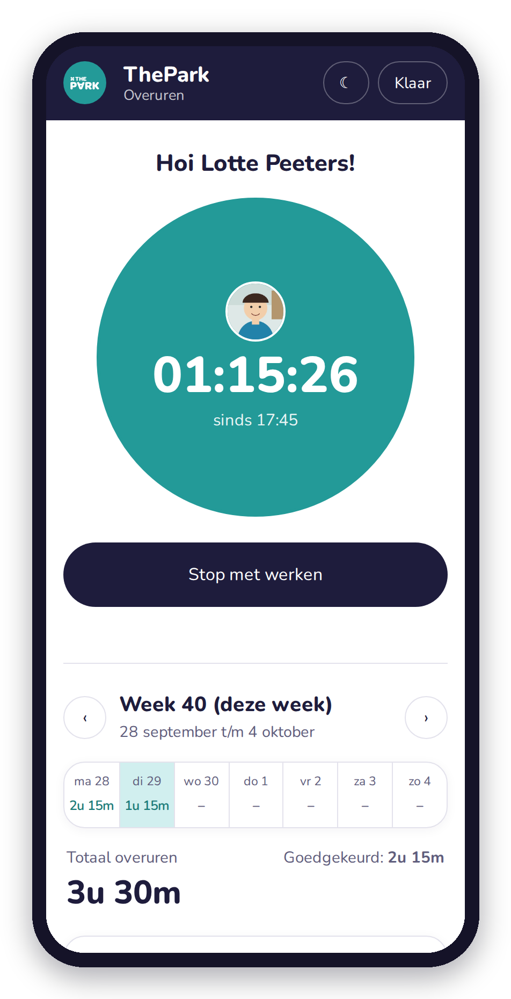
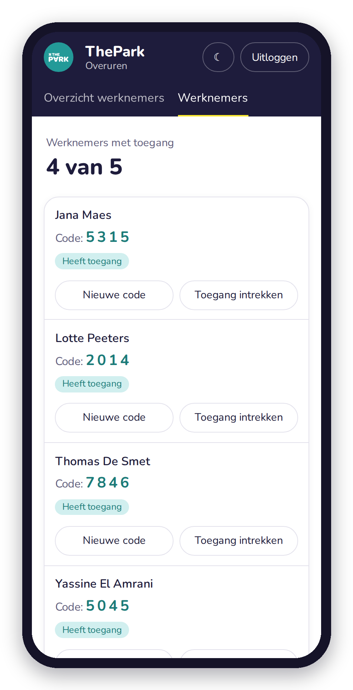

Overuren-app voor The Park Playground
Een mobiele web-app waarmee medewerkers hun overuren in- en uitklokken, met een selfie als bewijs.
- Opdrachtgever: The Park Playground
- Periode: 2026
- Technologie: React, TypeScript, Node.js/Express en SQLite
Over het project
Als shift leader zag ik dat het opvolgen van overuren beter kon. Werknemers starten met één knop op hun telefoon; de app neemt een selfie als bewijs en de tijd loopt tot ze stoppen. De werkgever ziet in een dashboard de uren per dag en per week, en keurt ze goed of af.
Evolutie van het project
- Analyse: bepaald wat werknemers en werkgever nodig hebben.
- Eerste versie: in- en uitklokken met selfie, als app op het beginscherm (PWA).
- Werkgeversdashboard: uren per dag en week, goedkeuren of afkeuren, accounts beheren.
- Beveiliging: inloggen met JWT, rate limiting, audit logging en tests met Jest.
- Oplevering: het project voorgesteld aan de opdrachtgever.
Screenshots



Code
De code staat als zip-bestand in mijn GitHub-repository.